id="js_content" style="">
△视频解读版，文字版可直接下拉查看。
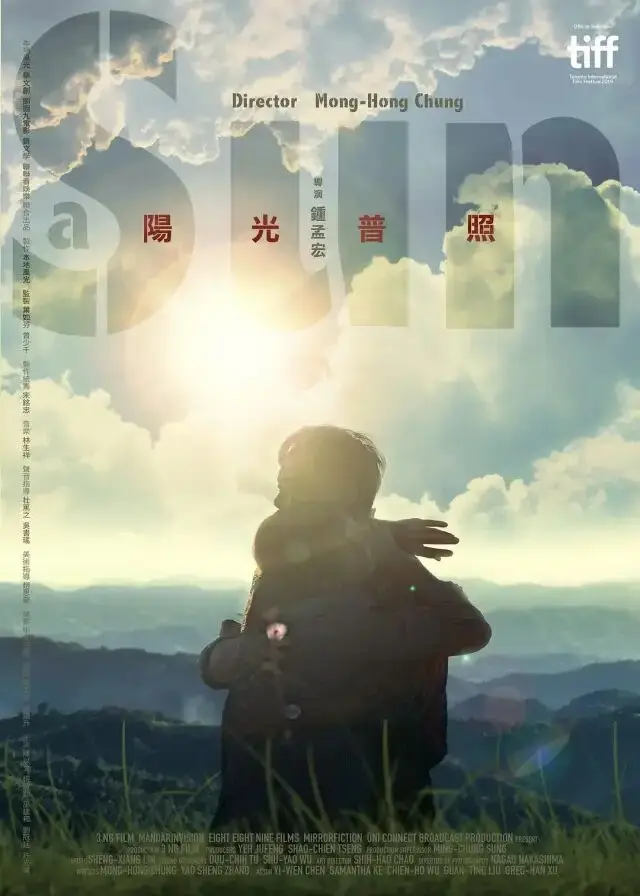
《阳光普照》是去年金马奖最大的赢家。
电影里讲了另一个版本的司马光砸缸。
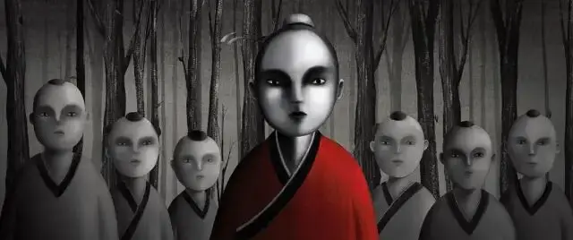
司马光和小朋友在玩躲猫猫，当司马光找到藏起来的所有小伙伴时，他依旧在不停的寻找，这让别的小朋友很不理解。
你已经都把我们找到了啊？
可司马光非常倔强，他坚持还有一个孩子没有找到。
他找啊找，终于在一片森林里发现了一个大水缸。
司马光于是举石砸向水缸，很快一个蹲在阴暗处的孩子出现在大家的面前。
果然，还有另一个孩子。
而那个孩子就是司马光自己。
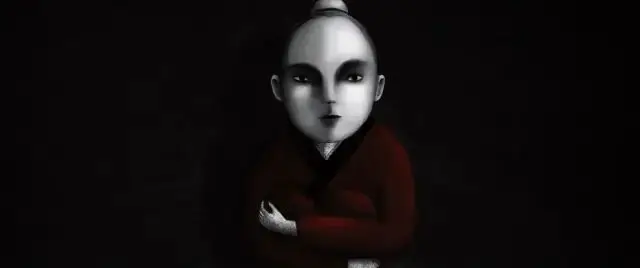
这个故事我非常喜欢，尤其是想起司马光坚持不懈地寻找另一个自己时，我会觉得很伤感。
大家都觉得司马光是一个阳光、聪明的孩子，却从未认识和了解那个住在又黑又湿的水缸里的司马光。
而司马光那样头也不回地寻找，并最终亲自用石头将水缸砸开，为的就是让大家认识这个熟悉的陌生人，让大家知道司马光也很孤独。
讲这个故事的人是电影里的阿豪，他外表阳关帅气，学习成绩非常优异，是一个平凡家庭的希望。
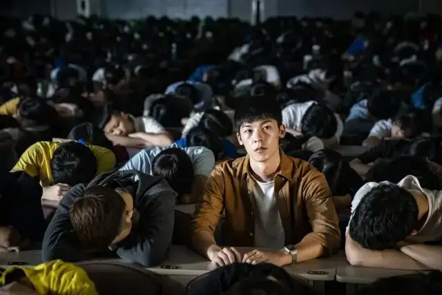
他的弟弟阿和却是一个四处惹事生非的孩子，前不久阿和和兄弟菜头还将另一个同学砍伤，两人因此被关进了少年辅育院。
因此，阿豪更成为了父母唯一的希望。
但现实不是童话，阿豪没有司马光那样幸运。
家人、同学和老师，没有人像故事中的小伙伴那样有功夫跟着阿豪去发现水缸里低声啜泣的自己。
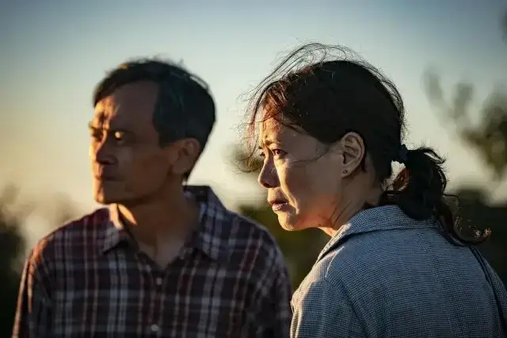
甚至，大家讨厌那样负面、灰暗、敏感脆弱的阿豪。
所有人喜欢的是那个既懂事、学习好还长的很帅的阿豪。
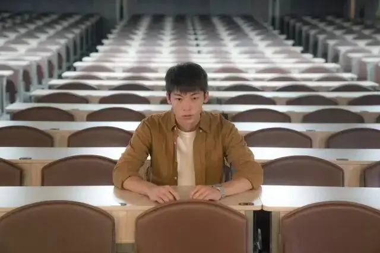
所以，阿豪只能从高高的楼顶一跃而下。
跳楼之前，他洗了澡，把衣服和房间收拾的整整齐齐，甚至把自己手机里的短信删的一干二净。
他太懂事了，不想给家人带来一点麻烦，也不想给家人留下一丝蛛丝马迹，以防他们发现那个已经在黑暗水缸里生活了十几年的孩子。
就让那个阿豪孤独地溺死在水缸中吧。
但是，一旦水缸里的阿豪死了，另一个阳光快乐的阿豪也就跟着死了。
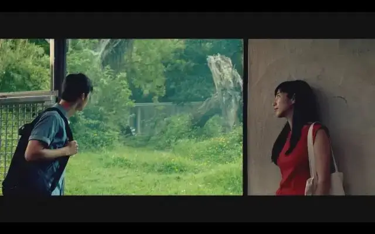
这就是这部作品呈现出来的人生真相，我们讨厌自己的软弱和缺陷，我们想要变得坚强独立，可那些让我们讨厌的幽暗和弱点却是赖以生存、不可缺少的东西。
因为，我们是人，是不完美的罪人，而不是那个散发着温暖的太阳。
软弱、缺陷这些本就是我们人的一部分。
所以，当一个世界要求一个人变成一个太阳的时候，就是要求一个人把本来属于人的东西强制切除。
那么，这个世界一定是一个非人的世界。
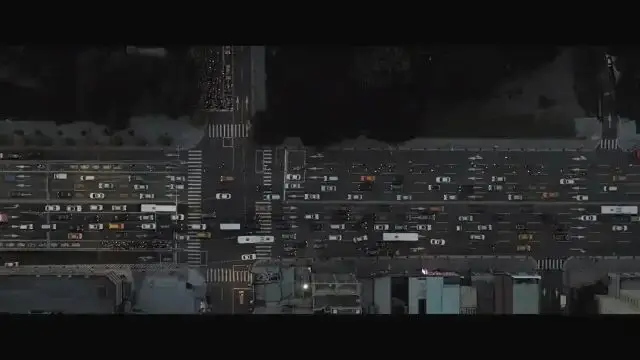
这就是现代人的困局，我们活在一个追求成功、聚焦精英的时代，一个开口闭口就是loser的年代，一个追求自我、追求独立的年代。
这些都在逼着我们成为太阳，所以才会有那么多现代人的轰然崩塌。
就是那么一瞬间，一个那么阳光坚强的人就会崩溃自杀，悄无声息！
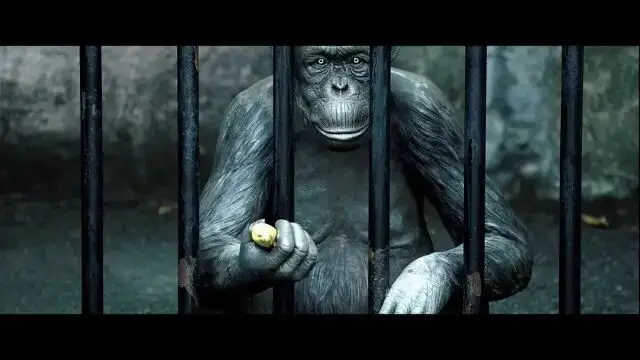
我们这些现代人自以为生活在一个进步的年代，但是这个高大上年代容忍不了矮底搓，没有接纳软弱的能力和时间。
《阳光普照》便深刻地表现了这种现代人的困局，阿豪是家庭的太阳，但他知道他根本不是太阳，所以他很痛苦。
他很想做自己，变成一个普通人，但是父亲的期望、同学的期望让他没有办法做回普通人。
所以，当阿豪越像太阳的时候，越是他虚伪、脆弱、孤独的时候。
所以阿豪会说：
我也好希望跟这些动物一样，有一些阴影可以躲起来。
但是我环顾四周，不只是这些动物有阴影可以躲，包括你，我弟弟，甚至是司马光，都可以找到一个有阴影的角落。
可是我没有，没有水缸，没有暗处，只有阳光。24小时从不间断，明亮温暖，阳光普照。
阿豪作为一个人，他成为不了家人的太阳，所以他只能以死抗命。
看懂了这一点，我们便可以看懂这部作品。
比起阿豪，从小就很坏的阿和是幸运的，因为他从未想过要做一个太阳，所以他能活下来。
父亲因为阿豪的死，选择了拥抱那个自己过去一直瞧不上眼的阿和。
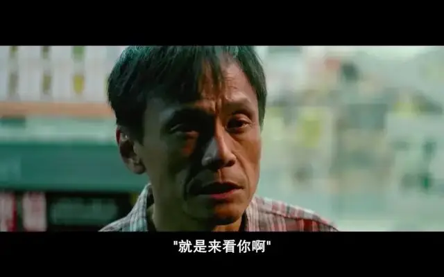
但是父亲的悲剧在于他想成为阿和的太阳，而成为太阳的代价就是杀死菜头，牺牲自己的良知和别人的性命。
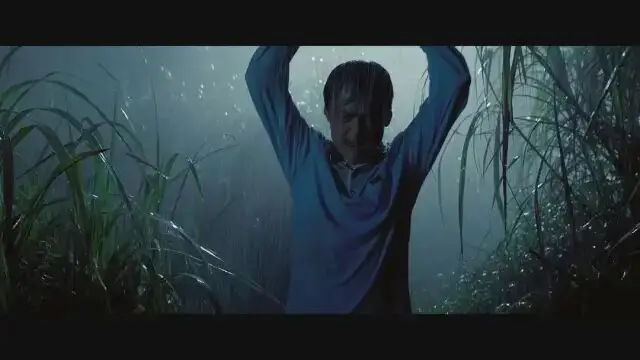
所以，人类的悲剧就是自己是个蚂蚁，却一直想过大象的生活，自己是一条鱼，却非要自我革命去陆地上生活。
不仅自己办不到，还哭着跪着求着别人去做。
因此，当一个人越像一个太阳的时候，他就会越可怕。
希特勒要成为德国的太阳，要看上去无所不能。
所以，他蔑视人的同情心，大力宣传弱肉强食。
最终他越来越像太阳，却造成了人类历史上最恐怖的种族大屠杀。
这样的太阳在我们中国的历史上也非常多，比如说曹操，他要成为太阳，所以“宁可我负天下人，不可天下人负我”。
这种想要成为太阳的迷梦在我们国家根深蒂固，甚至很多炮灰心甘情愿付出自己生命，只为了升起一个人造太阳。
所以很多太阳，不只是自己升起来的，更多是被人逼起来的。
但人只是一个人而已，我们需要的不是把自己或者别人变成太阳，而是需要一种力量，能让我们接纳自己的无能，也能够有力量和忍耐去承载别人的无能。
这种力量能够带给我们一种眼光，让我们能看到软弱、无助、自私、孤独的背后是对爱的渴望。
孤独有所深，对爱的渴望就有多深。
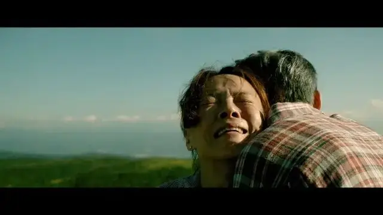
水缸里的司马光如果要躲避别人，那么没有一个人可以找到他，甚至是司马光自己，他需要的是爱和接纳。
我自己再将司马光的故事进行改编：
当时司马光坚持还有另一个孩子没有找到。
他和小伙伴们一直在树林里寻找，却一直没有找到。
忽然，一个湿漉漉的身躯从树林深处慢慢地向司马光走来，这吓坏了大家，可大家并没有离开。
随着那个身躯一步一步地走近，大家终于看清楚了，他是司马光。
大家拍着手笑着说，原来我们还有一个落汤鸡司马光。
一直在寻找的司马光不禁怔在那里，接着问落汤鸡司马光，你是怎么找到我的。
那个满身湿漉的司马光说“我也不知道，我在水缸里，听到有声音在说，你在哪里？”
于是，我爬出水缸，跟着那个声音一路走来，直到发现了你。
这个声音就是我说的那种力量
这是一种充满神性的爱，他完全了解你我的内心深处，但并不像人的爱那样有限。
这种爱能超越人类情感、理性和意志的极限，有力量能够让我们摆脱自我割裂和孤独。
原来，我们一直想做太阳，是因为我们需要太阳。
可悲剧的是，我们不仅没有找到太阳，还自己做起了太阳。
但是当我们绝望的时候，我们才会发现，那真正的太阳其实一直在远处照耀着我们。
否则，我们又怎么会拥有生命的气息。
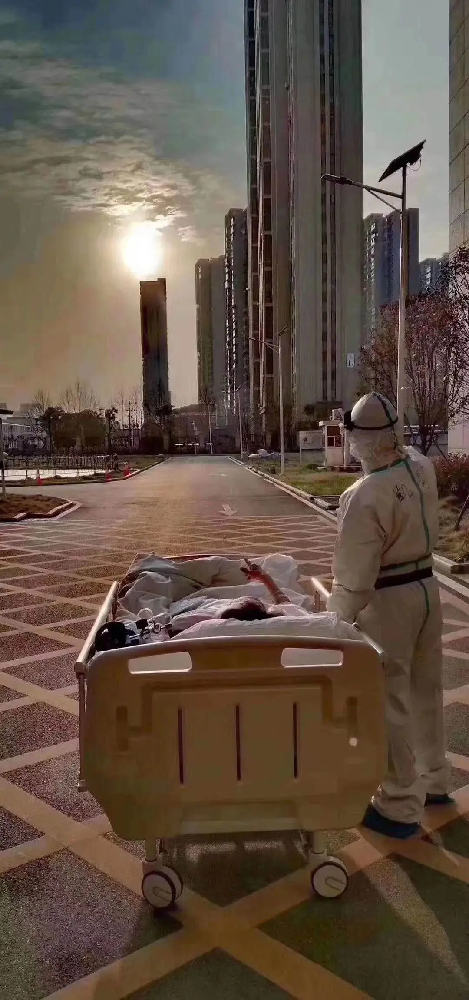
-END-
这里没有挑逗你眼目情欲的小鲜肉
也没有挑动你肉体情欲的段子
更没有膨胀你今生骄傲的鸡血
我们只在乎那些最质朴真诚的作品
在那里我们才能恢复真正的想象力
我们也坚信这才是我们真正需要的

ID:Six_hundred_hits
长按二维码，一键关注
【六百击】
电影评论
尽情分享朋友圈

微信二维码打赏通道
特别提醒：文中图片来自网络，版权归原作者所有，如有侵权请立即与我们联系,我们将及时删除。